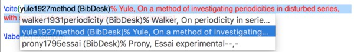

Introduction
Rédiger sa thèse n’est pas un long fleuve tranquille. Cette étape nécessite de prendre du recul sur les 3 années (ou plus !) de recherches effectuées, de rassembler ses résultats puis de les organiser de telle sorte à identifier un fil conducteur répondant à sa problématique initiale. Si l’histoire que vous allez raconter, et la façon de la mettre en forme, sont des initiatives singulières, les moyens techniques utilisés eux, sont généralement partagés par l’ensemble des doctorants se lançant dans la phase terminale de rédaction. La composition de thèses scientifiques requiert bien souvent l’utilisation de LaTeX, permettant la production de formules mathématiques élégantes et la mise en forme du texte de très grande qualité. Cependant, même pour les utilisateurs confirmés de \(\LaTeX\), l’emploi systématique de commandes et d’environnements qu’il faut taper de façon récurrente au clavier, peut vite s’avérer chronophage pour de gros documents. Ma thèse ayant dépassé les 300 pages, je me suis rapidement rendu compte au fil de l’écriture qu’il était indispensable d’optimiser sa production pour gagner du temps (ou ne pas en perdre, c’est selon), afin de finir en temps voulu et se concentrer sur l’essentiel.
Dans ce tutoriel je vous partage différentes astuces qui m’ont permis de rédiger efficacement du contenu \(\LaTeX\) grâce aux fonctionnalités qu’offrent certains éditeurs. Pour le besoin de la démonstration j’ai utilisé l’éditeur TeXShop disponible par défaut sous Mac OS X, mais la plupart des fonctionnalités exposées ici sont transposables aux autres éditeurs (le meilleur éditeur est selon moi celui que l’on maîtrise). J’avais par ailleurs dans un autre billet fait la promotion de Kile pour Linux et rédigé un tutoriel pour l’installation de Kile Live Preview.
{kind=link}
Exemple introductif. Quand on est atteint comme moi d’un handicap, et qu’on veut s’éviter une tendinite, on prend l’habitude d’optimiser ses mouvements. Ne pouvant taper qu’avec mes deux index, la composition d’une formule LaTeX et donc des balises qui l’accompagnent, par exemple
\begin{equation}
....
\end{equation}me prend environ 5 à 6 secondes : il faut presser (et maintenir!) pour obtenir le backslash “\” les touches ⌥+⇧+/ (ce qu fait 3 touches), écrire “begin” (5 touches), presser et maintenir ⌥+( (2 touches) pour obtenir l’accolade ouvrante “{”, écrire “equation” (8 touches), de nouveau l’accolade fermante “}” (2 touches), soit à ce stade 20 touches ont été frappées ; puis tout pareil avec la balise de fin qui nécessite de presser quant à elle 18 touches, ce qui totalise 38 frappes au clavier pour obtenir ces balises permettant d’écrire UNE formule. Enfin même pas la formule en elle-même avec les différents symboles mathématiques qui la composent, eux aussi représentés par des commandes spécifiques, mais 38 frappes QUE pour créer l’environnement qui permet l’écriture de la formule. Multiplié par le nombre de formules que comportera votre document LaTeX, voyez la perte de temps que cela engendre de réécrire à chaque fois ces balises…
Nous allons voir différentes façons d’optimiser l’insertion de telles balises, environnements, commandes, etc suivant vos besoins. Je donnerai quelques exemples d’astuces personnelles pour gagner du temps précieux. Typiquement sur l’exemple précédent, nous allons voir comment en 3 touches (au lieu de 38!), il est possible d’insérer d’un coup :
\begin{equation}
•
\end{equation}•et en prime en positionnant votre curseur en lieu et place du premier “bullet” (le rond noir), ce qui vous place directement entre les balises pour écrire votre formule. Et ensuite pouvoir en sortir sans toucher à la souris, par exemple en pressant ⌘+N (N comme Next) qui vous téléporte directement après la balise, au niveau du deuxième “bullet”.
Plusieurs astuces sont possibles pour devenir un AS du clavier, et se déclinent en 3 catégories :
- Les commandes de complétions
- Les Macros (éventuellement couplées à des programmes AppleScript)
- Les raccourcis claviers (Key Bindings)
C’est parti !
En guise de préliminaires, commençons par rappeler quelques fonctionnalités de base propre à votre OS (ici pour Mac) qui peuvent s’avérer utiles.
Fonctionnalités de base
Activer les touches rémanentes
La première chose qui fait gagner un peu de temps (et indispensable pour ceux qui tapent à moins de trois doigts), c’est d’éviter d’avoir à maintenir les touches de modifications ⌘, ⌥, ⇧, ⌃, etc pour taper des caractères comme le backslash “\” (⌥+⇧+/). Pour cela aller dans Préférences système > Accessibilité, et cochez Activer les touches à auto-maintien.
{kind=link}
Maîtriser son clavier dans le traitement de texte
Pour se mouvoir au sein de votre document, il peut être utile d’avoir en tête les combinaisons de touches classiques dont dispose votre clavier sous votre OS. Par exemple :
- La touche ⌘ suivi des touches directionnelles ←↓→↑ permettent respectivement d’aller en début de ligne, en bas de page, en fin de ligne et en haut de page.
- La recherche (et remplacement) d’un mot se fait par ⌘+F, ⌘+G pour aller au mot suivant
- Se déplacer au début du mot précédent par ⌥+← (resp. ⌥+→ pour la fin du mot) et idem en maintenant ⇧ pour la sélection.
- Sélectionner tout par ⌘+A, supprimer le caractère à droite du curseur par Fn+⌫, supprimer jusqu’à la fin de ligne ce qui suit le curseur par ⌃+K
et bien d’autres disponibles par exemple ici.
Les commandes de complétion et modèles de TeXShop
Générer des environnements via quelques caractères
Pour afficher d’un coup de baguette magique l’environnement
\begin{equation}
•
\end{equation}•tapez dans l’éditeur beq puis presser la touche de complétion Tab (ou Escape, vous pouvez configurer l’une ou l’autre dans les préférences de TeXShop), et paf ça écrit tout ça pour vous!
Comment ça marche ?
Et bien vous avez un fichier texte dans TeXShop qui contient toutes ces commandes de complétion extrêmement utile, ce fichier se trouve dans Source > Commandes de complètement > Editer le fichier de commande. Pour la commande qui nous intéresse, la complétion est définie par cette ligne :
beq:=\begin{equation}#RET##INS#•#INS##RET#\end{equation}•dont #RET signale un retour à la ligne, et #INS spécifie où le curseur atterri une fois les balises affichées, ici ça sélectionne le premier “bullet”.
Il y en a pléthore! Par exemple bf pour insérer \textbf{#INS#•#INS#}, usep pour \usepackage{#INS#•#INS#}#RET# ou encore toutes les symboles mathématiques grecs : xa pour \alpha, xe pour \epsilon, et ainsi de suite.
Ce qui est super c’est que vous pouvez également créer les vôtres en les ajoutant à cette liste et en sauvegardant ! Cela fait économiser un temps fou en évitant d’avoir à taper le nom entier du symbole avec surtout le backslash systématique ! Même plus besoin d’utiliser les touches rémanentes pour le coup. Aller un exemple plus tricky pour percevoir la puissance de l’astuce :
incgt:=\begin{figure}#RET#\centering#RET#\begin{tabular}{cc}#RET#
\includegraphics{#INS#•#INS#}&\includegraphics{•}
#RET#\end{tabular}#RET#\caption{•}#RET#\end{figure}#RET#•Cette commande de complétion incgt (pour includegraphics with tabular) insère :
\begin{figure}
\centering
\begin{tabular}{cc}
\includegraphics{•}&\includegraphics{•}
\end{tabular}
\caption{•}
\end{figure}
•Avouez que c’est quand même bien pratique !
La complétion pour les références d’équations ou biblio
En activant la fonctionnalité “Complétion de Bibtex” dans les Préférences > Document > Editeur, si votre fichier .bib (contenu dans le même dossier que votre fichier .tex) est ouvert dans Bibtex, alors en positionnant votre curseur dans la commande \cite{}, le fait d’écrire les premiers caractères d’une références biblio puis de presser la touche Fn + F5 fait apparaitre une liste déroulante avec les entrées possibles débutant par ces même caractères :
 On a la même fonctionnalité pour les références internes associées à un \label{} :
{kind=link}
NB : Vous pouvez aussi insérer une référence via une fenêtre pop-up par le raccourci ⌘+⇧+R.
Générer des templates LaTeX via des “Modèles” prédéfinis
Une autre possibilité pour insérer ces gros blocs de code \(\LaTeX\) (pas forcément pratique à écrire sur une ligne dans le fichier texte de complétion) est de l’enregistrer sous forme de template en .tex et de le stocker dans le repertoire suivant de TeXShop : ~/Library/TeXShop/Templates/ qui sera ensuite disponible dans le menu déroulant “Modèles” de votre fenêtre d’édition.
{kind=link}
Il est également possible d’utiliser la palette \(\LaTeX\) du menu Fenêtre, accessible par ⌥+⌘+-, qui vous fourni visuellement la plupart des symboles et environnements \(\LaTeX\) à portée de clic.
{kind=link}
De même la palette Matrix vous permet de remplir directement votre matrice dans l’interface prévue à cette effet.
{kind=link}
Tout ceci est davantage user-friendly, mais ça demande de se saisir de la souris, là où les geeks préfèrent tout avoir à portée de clavier pour ne pas faire de va et vient entre la souris et le clavier. Au choix selon ses goûts :)
Enfin pour de gros tableaux ou matrices comportant non pas des nombres mais des formules volumineuses il peut être préférable d’insérer uniquement la trame de l’environnement avec le nombre de cellules qui va bien, séparées par des “bullet”, que l’on remplit ensuite dans l’éditeur. Pour cela on peut se rendre dans Macros > Column macros > New Tabular (⌃+⌘+T), spécifier les dimensions du tableau et obtenir :
{kind=link}
Notez au passage que l’avantage d’avoir recours à des raccourcis qui insèrent directement le code \(\LaTeX\) des différents environnements, commandes, etc, permet de ne pas se planter dans l’oubli d’accolades ou autres joyeusetés provoquant des erreurs de compilations dont on passe ensuite trois plombes façon où est Charlie à trouver où est cette *** d’accolade manquante ! (Vu la qualité des messages d’erreurs du compilateur \(\LaTeX\) :D )
La prochaine étape consiste donc une fois les balises insérées, à taper la formule bien sûr, mais ensuite à sauter jusqu’au second “bullet” pour sortir de la balise sans toucher à la souris, en pressant ⌘+N par exemple. Le problème, c’est que ce raccourci est déjà utilisé par le menu de TeXShop pour créer un nouveau document (ce qui est en général utilisé qu’une seule fois, contrairement aux nombreuses fois où l’on voudrait sortir d’un environnement \(\LaTeX\) à chaque formule du document). Il faut donc voir comment redéfinir, ou carrément supprimer un raccourci menu de TeXShop.
{kind=link}
Les commandes macros à personnaliser
Allez dans Macros > Ouvrir l'éditeur de macros et faites une entrée “Backslash” avec pour commande ⌘ + : qui insèrera le symbole “\”.
{kind=link}
Vous pouvez constater que j’ai défini d’autres macros comme par exemple ⌘+( qui m’insère un crochet ouvrant à la place de l’usuel ⌥+⇧+(, ou encore ⌘+L que j’ai redéfini pour insérer une valeur absolue ou une norme \lVert #SEL##INS \rVert. Le marqueur #SEL# permet d’appeler la macro sur une portion de texte sélectionné et de le placer à l’endroit où le marqueur est présent, ce qui permet donc a posteriori dans notre cas de normer telle ou telle formule en 2 frappes! Utile également une macro qui me permet d’afficher les symboles mathématiques en gras (pour les vecteurs, les matrices, les opérateurs, etc), ce qui s’effectue en tapant ⌘+B qui m’insère \vect{•}• pour les vecteurs, ⌘+⇧+B soit \mat{•}• pour les matrices, ou encore ⌘+⇧+⌃+B soit \ope{•}• pour les opérateurs, qui sont autant d’alias de que je définis dans mon fichier de preambule par un \newcommand.
Remarque : Pourquoi me direz-vous ne pas simplement associé la macro ⌘+B à \mathbf{} ? Pour une raison de généricité. En effet suivant la typologie utilisée dans certains articles scientifiques, les vecteurs sont ou non en gras, les matrices si elles sont en gras sont ou non en italiques, et ainsi de suite. Par conséquent rattacher les macros à une commande générique permet ensuite de l’instancier comme bon vous semble sans avoir à remplacer toutes les occurrences de \mathbf{} qu’il pourrait y avoir dans votre document, et qui pourraient très bien concerner autre chose qu’un vecteur, une matrice ou un opérateur… De même en réalité mes macros pourvues pour la norme ou pour le produit scalaire renvoient à une commande \(\LaTeX\), qui me permet de moduler leur représentation suivant le contexte (la norme est-elle représentée par des barres verticales simples ou doubles \(\lvert x\rvert\) vs. \(\lVert x\rVert\), le produit scalaire est-il représenté par \(\langle \mathbf{x},\mathbf{y}\rangle\), \((\mathbf{x}\,|\,\mathbf{y})\) ou \(\mathbf{x}\cdot \mathbf{y}\) ?), etc.
Autant de combinaisons astucieuses possible au gré de votre imagination…
Un raccourci peut en cacher un autre : les KeyBindings !
Je vous ai parlé des commandes de complétion, de l’éditeur de macros que vous savez maintenant créer, mais il reste un type de raccourci que je n’ai pas encore évoqué : les raccourcis claviers à proprement parlé ! Ceux dont une touche de caractère spécial provoque une action spéciale, par exemple, je souhaiterais que l’accent circonflexe ^ suivi de la touche espace me produise :
^{}•en me plaçant dans les accolades. Plutôt pratique pour écrire des exposants qui comportent plusieurs éléments n’est-ce pas ?
Pour cela il faut se rendre dans Source > Raccourcis claviers > Editer le fichier des raccourcis, et indiquer en sortie {#SEL##INS#}•
{kind=link}
Un des raccourcis déjà présent est ⌥+< (resp. ⌥+⇧+>) qui correspond au caractère spécial ≤ (resp. ≥) et qui produit \leq et \geq, soit en \(\LaTeX\) : \(\leq\) et \(\geq\). D’autres encore, ⌥+p produit π, et ⌥+, produit ∞, qui font office de raccourcis aux symboles \(\LaTeX\) correspond \pi et \infty. Voyez que par rapport à la complétion du symbole \(\pi\) que l’on a défini par xp, qui nécessite l’usage de 3 touches (x,p,Tab), ici ⌥+p n’en nécessite que 2. De même on peut redéfinir le raccourci ⌥+/ qui donne initialement ÷, pour qu’il insère •, ce qui là encore permet d’économiser une touche (à la place de la complétion fr).
Remarque : Pour revenir à l’exposant suivant d’accolades, je préfère utiliser la macro ⌘+P (qu’il faut au préalable désaffecter à “Imprimer…” dans le menu) plutôt que le raccourcis ⌃ car la plupart du temps l’exposant se réduit à un caractère \(x^2\) suivi d’un espace pour passer à la suite, là où l’usage d’accolades nécessite de frapper 2 touches (⌘+N ou →+espace) pour en sortir. J’aurais préféré pour utiliser la commande ⌘+⌃ mais cela ne semble malheureusement pas fonctionner, du fait certainement que cette touche est une dead key. De même pour les indices, je conserve la touche “_” pour les indices simples, et j’ai redéfinis pour les indices nécessitant des accolades la macro ⌘+_ (soit ⌘+- qui était affecté au zoom décroissant sur le texte dont je me sers que très peu), qui produit donc _{•}•.
Un pense-bête LaTeX à accrocher au mur de votre bureau
Au départ, créer et retenir tous ces raccourcis de commandes peut vous donner l’impression de perdre du temps, mais très vite tous ces automatismes vous rendront un grand service et vous feront à coup sur économiser pas mal de temps quand vous les multiplierez par le nombre de pages que vous noircissez.
Pour vous faciliter la tâche je vous ai créé un mémo \(\LaTeX\) sous forme de tableau qui synthétise les commandes usuelles et les raccourcis que j’utilise personnellement et que vous pouvez personnaliser avec vos propres raccourcis !
Il ne me reste plus qu’à vous souhaiter une bonne rédaction, et du courage … 😉
PS : N’hésitez pas à poster vos propres astuces en commentaires !